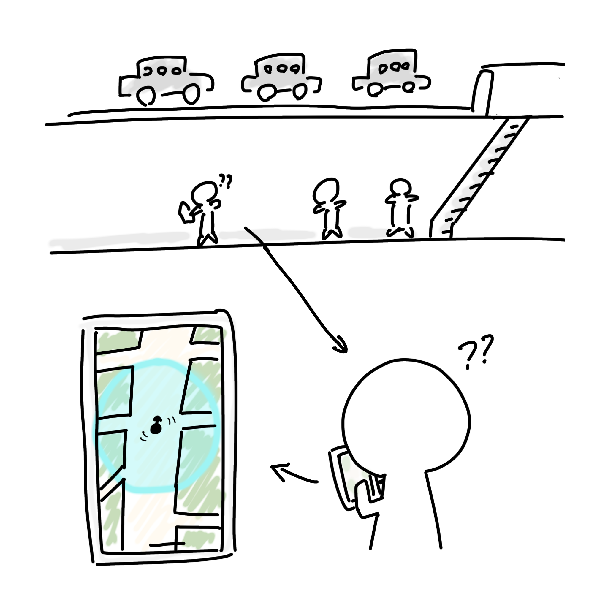
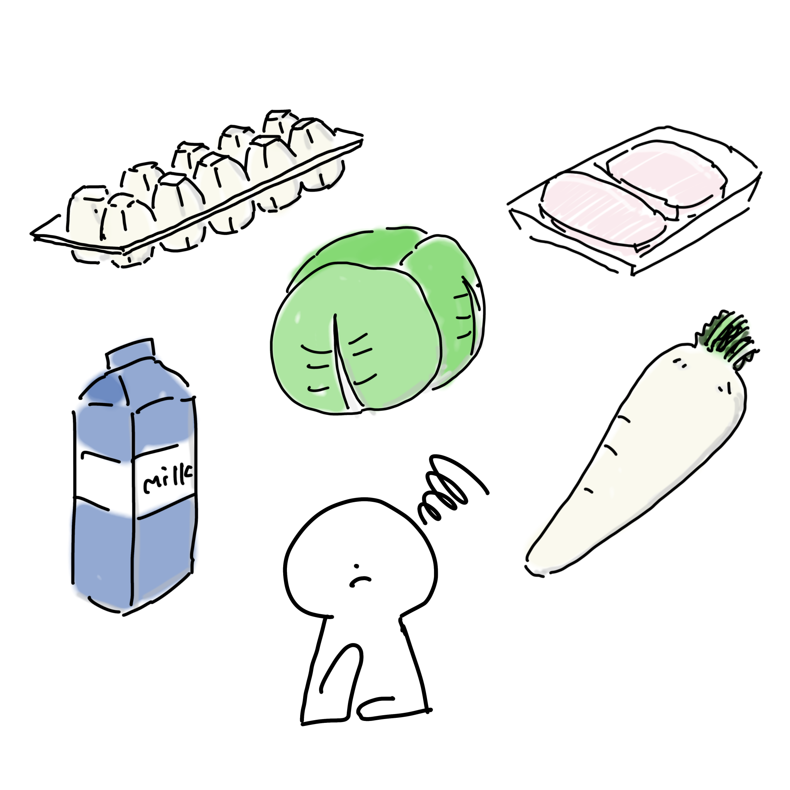

宿題 世の中に存在する課題の発見
地下でマップが使えない

地上では便利に使える地図アプリも、地下では位置情報を取得できず自分がどこにいるのかわからないということが起きてしまう。
地下内での移動でも、位置情報を取得できる仕組みがあれば便利だと思う。
ひとり暮らしには食材を使いきれない

卵や野菜、賞味期限の短い食材はひとり暮らしだと使い切るのが大変。少量パックは単価が高く、お徳用パックは消費しきれない。